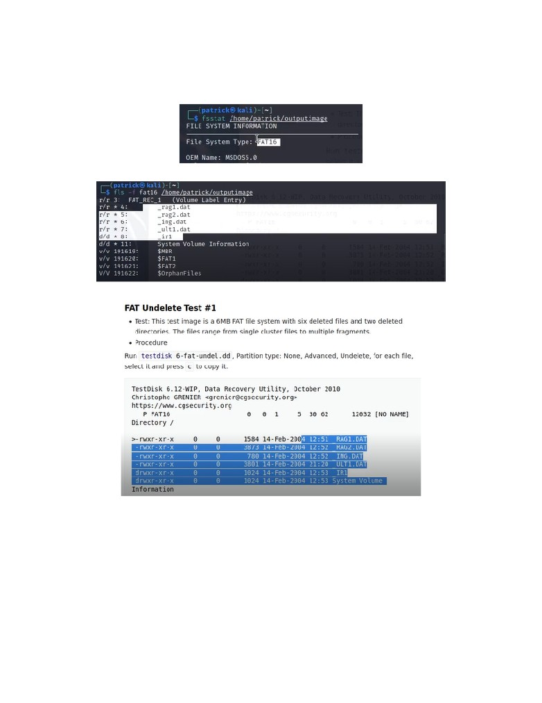

INFR 4690U - Final Project: Deleted Data and File Recovery
Group 50
Deleted Data and File Recovery
INFR 4690U
Group 50: Pam Hammer, Jacob Fiume & Colin Léger
Ontario Tech University
1
INFR 4690U - Final Project: Deleted Data and File Recovery
Group 50
Table of Contents
Abstract
3
History/Introduction
4
Cutting Edge Research
5
Tools
6
1 - TestDisk
6
General Information
6
How to use it:
6
Our Impressions:
10
2 - GNU Ddrescue
11
General Information
11
How to use it:
12
Our Impressions
14
3 - Mondo Rescue
15
General Information
15
How to use it:
16
Our Impressions
21
Demonstration
22
Overall Impressions
29
Conclusion
29
References
30
2
INFR 4690U - Final Project: Deleted Data and File Recovery
Group 50
Abstract
File recovery research and techniques have existed since the dawn of the computer age, originally
consisting of basic binary techniques, building up to today’s advanced techniques and tools. This paper
delves into an overview of this history leading to modern-day improvements and research into the field of
deleted data recovery. Furthermore, three open-source tools are presented and demonstrated as
alternatives for solving the challenges faced by many computer users during occasional data corruption
and/or deletion. These tools are TestDisk, Ddrescue, and Mondo Rescue. All three are installed, reviewed,
and compared by students through criteria, and hands-on tests designed to evaluate their effectiveness.
Overall, our team concluded the most versatile tool of the bunch was TestDisk, with the most
user-friendly interface and efficient performance.
3
INFR 4690U - Final Project: Deleted Data and File Recovery
Group 50
History/Introduction
Data recovery is the process and methods engineers use to extract and recover data from a damaged or
inaccessible medium. The exact data recovery that was first done is unknown, however, the origins of
data recovery can be traced back to 1837, where the first mechanical computer was created by Charles
Babbage and Ada Lovelace. Babbage created the “Analytical Engine” - a programmable analog computer
that introduced many concepts for modern-day computer components. Babbage and Lovelace worked
together to finish the Analytical Engine, with Ada Lovelace writing the first algorithm for the computer.
These programs were punched into jacquard cards made of stiff paper. Unfortunately, one of these cards
was damaged during handling, and Babbage and Lovelace attempted to repair the card, however being
unable to repair it. This is the first known case of data recovery in computers. (History of Data Recovery,
2014)
Eventually, computing moved away from punch cards towards magnetic tape for long-term data storage in
1951. The UNIVAC I (UNIVersal Automatic Computer I) was the first computer to be commercially
available in the United States and was also the first computer to use magnetic tape to record data. These
tapes broke often and were sometimes unreadable, making data difficult to retrieve. Then in 1952, IBM
invented the vacuum column to hold down tapes during movement, this helped boost the speed of data
processing as well as decreasing the amount of tape breakage allowing for data to be easily recovered if
any issues arose. (History of Data Recovery, 2014)
Fast-forwarding a couple of decades to the 1970s and 1980s, where personal computers started to become
more common in businesses as well as homes, started the spawn of many new data recovery companies.
At this time floppy disks, as well as hard disk drives started to be widely adopted, both of which were
prone to data loss. As time went on and households began getting internet access, this led to more storage
space being utilized by the user - and leading to more data to potentially be recovered. Although it is
difficult to pinpoint exactly which company was the first data recovery company, there are a few
companies that are the pioneers of commercial data recovery such as DriveSavers, which was founded in
1985 in California. (Brief History of Data Recovery, 2019)
With computers and technology becoming such an ever-present object in our everyday lives, data
recovery is becoming more important, to the point where it is essential to many businesses and people. At
any moment valuable data can become corrupted, lost, or partitions could even become inaccessible.
Many modern businesses have outdated data protection or recovery solutions in place that are unsuitable
for the business demands they face. It is critical that businesses look into their data recovery capability
and evaluate it to make sure it is up to par and can keep up with data recovery in the event of an outage or
failure. In many cases, it is recommended that these companies look to some of the new emerging
software and techniques in data recovery. Having suitable data recovery solutions in place is very
important to ensure that the high volumes of data being generated are protected efficiently and have the
ability to be recovered without any issue. (A Brief History of Data Backup, 2021)
4
INFR 4690U - Final Project: Deleted Data and File Recovery
Group 50
Cutting Edge Research
We stand on the shoulders of giants in the field of deleted data recovery. We can all agree that the amount
of dedication and hard work that has, and continues to, go into developing new techniques, tools, and
written work is incredible. Without these products and publications, specifically the open-sourced ones,
we would not learn so effectively about deleted data recovery. Here we will discuss some various themes
surrounding deleted data recovery techniques and even data protection schemes that have particularly
stood out to us as cutting edge.
A recurrent theme we have discovered throughout our research in the area of deleted data recovery seems
to be with data protection. More specifically, the notion surrounding the importance of not only
performing frequent backups but the design of such backup and storage systems.
Writers Hyungsoo Jung, Yongsu Park, Chi-Wong Song, and Sooyong Kang discuss their approach to a
"novel privacy-protected data recovery service framework, the parity cloud service (PCS)" (Jung et al,
2017) in their article PCS: A parity-based personal data recovery service in cloud. This approach is
designed for personal use with the following considerations in mind: reliability, economical efficiency,
convenience, and efficient privacy protection. In their article, Jung et al explained the most reliable and
secure way of personal data storage, such as a RAID system, may be too expensive for personal use. The
alternatives, such as cloud storage services or external HDDs, while cost-effective, may not be the most
secure, trustworthy, or reliable choices. In their opinion, making the Parity Cloud Service (PCS) approach
an optimal choice for the everyday user to store their data.
The proposed PCS system is similar to that of RAID. In fact, "The block-level parity generation and
recovery algorithms used in RAID-4 are adopted for parity generation and recovery"(Jung et al, 2017).
The difference being, the parity blocks are stored in an external cloud server. This is overall more
cost-effective and efficient, as user data is never transferred or stored in the cloud.
We see the importance of protecting sensitive data, and welcome innovative ways of storing information,
like the one introduced by Jung et al. As goes the saying, “prevention is better than cure” (Erasmus).
However, as we are acutely aware, failures happen, and backing up systems takes time. We are also
conscious of the importance of data recovery from the perspective of criminal investigations. Thankfully,
there have been some major leaps in the field of deleted data recovery.
As it relates to general data recovery and file carving, there are plentiful papers that discuss various
techniques. Here we will discuss works by M.I. Cohen, and Laurenson surrounding their research and
observations on this topic.
Many modern file systems have begun removing critical information on a file once it has been deleted.
This poses a threat to traditional file recovery, as this information was leveraged to reconstruct the deleted
file. Given this, a new recovery technique known as carving was developed. M.I Cohen explains the
process of carving in his paper Advanced carving techniques as “the process by which files are extracted
from raw images without the use of filesystem allocation information.” (Cohen, 2017) Like any
innovative technique, it is likely to evolve. Cohen describes the first type of file carvers as “simple
5
INFR 4690U - Final Project: Deleted Data and File Recovery
Group 50
File/End of File (SOF/EOF) carvers.” Putting it simply, the carvers “searched the image for file headers of
common files and possibly file footers and extracted all the data in between.” (Cohen, 2017) One popular
application that makes use of carving techniques, created by Christophe Grenier, is known as PhotoRec.
Grenier makes use of the simple file carving technique in this application to recover lost files, particularly
images.
In further papers, such as “Performance Analysis of File Carving Tools”, various proprietary and open
source, multi-platform tools were covered. The list includes tools such as EnCase, FTK, WinHex,
PhotoRec, Scalpel, Foremost, and more. Through a variety of tests, utilizing various data sets consisting
of disk images, images, and files, these tools were tested based on their effectiveness at carving including
partial carving and full carving, ability to carve a large number of file types, as well as the data processing
speed. Conclusions found that deeply understanding how tools work and keeping headers where possible
greatly increase the likelihood of data recovery. (Laurenson, 2013)
Tools
The following content covers three tools we have chosen which approach data and file recovery all
slightly differently. All of the following tools will provide an overview, as well as demonstrations which
will allow inexperienced users to learn how to use the tools.
1 - TestDisk
General Information
One of the tools we will be discussing is TestDisk; A free and open-source data recovery tool created by
Christophe Grenier. This recovery tool comes complete with a suite of capabilities, including recovery of
deleted partitions, the rebuilding of partition tables, and rewriting the Master Boot Record. TestDisk also
supports major disk partitioning schemes, such as Apple's partition map, GUID partition tables, and
PC/Intel's partition table. Major file systems such as FAT, NTFS, exFAT, and ext2 are also supported with
TestDisk. One important note about TestDisk is that it has been designed to support users with a wide
range of technical experience. (Grenier, 2019)
TestDisk is a versatile tool and makes use of modern recovery techniques such as carving. Written almost
entirely in C, the project was developed and maintained by only one main developer. External
contributions have been made to other fundamental pieces of the project such as distribution packaging,
documentation, and logo design. With the help of these contributors, documentation has been made
available in over 5 different languages. Another great thing about this project is that it stays relatively
up-to-date. The latest stable version was released in mid-2019, along with documentation being updated
in late 2020.
6
INFR 4690U - Final Project: Deleted Data and File Recovery
Group 50
How to use it:
TestDisk can run on a variety of operating systems, however, this section explores commands conducted
on a Linux machine, more specifically, Ubuntu 18.04. Installation can be completed with `sudo apt install
TestDisk`, or built directly from source following the installation guide. Once installed, TestDisk must be
executed with administrator privileges (OS agnostic).
We will now discuss the following scenario: A file “test.txt” has been accidentally deleted from an
external USB drive named “SanDisk Cruzer Glide”. Our goal is to leverage TestDisk and recover the
deleted file. This quick overview should provide a glance into the operations of TestDisk. A deeper dive
will be taken in a later section.
Step 0: Confirm Installation
Command: testdisk -v
Step 1: Launch TestDisk
Command: sudo TestDisk
7
INFR 4690U - Final Project: Deleted Data and File Recovery
Group 50
Step 2: Select recovery drive. Here we will select our external drive.
Step 3: Select the partition table type of our drive. TestDisk is smart enough to recognize that our drive
is using an Intel partition table. This is one of the ways that makes TestDisk such a great tool, especially
for beginners.
Step 4: Select the option. For file recovery, we need to select the ‘Advanced’ option. As we can see from
the image below, there are a variety of options we can choose from with a brief description of what their
functions are.
8
INFR 4690U - Final Project: Deleted Data and File Recovery
Group 50
Step 5: Select the drive partition where the file was erased.
Step 6: Select the file that needs to be recovered.
Step 7: Select the location where the recovered file should be saved to.
Important note: the destination location selected in this step should not be the same as the source partition
containing the deleted file. In this scenario, we will be selecting our Desktop directory, which is in a
different drive entirely.
9
INFR 4690U - Final Project: Deleted Data and File Recovery
Group 50
Success! We can now look in the Desktop directory to retrieve our recovered file. I would like to point out
that this entire process took less than a minute.
Our Impressions:
Jacob’s Impression:
TestDisk was very easy to set up and install, and I ran into no issues at all while I was setting it up. I
found that TestDisk was very simple, yet very effective at recovering files. I tested TestDisk by creating
and then deleting a text file on one partition, and then scanning/analyzing that partition and successfully
finding and recovering said text file. I think having some sort of GUI would enhance the tool and make it
a lot simpler to use, however, if you know your way around a command-line interface, you will have no
issues with this tool. TestDisk's ability to not only recover files but also deleted partitions is extremely
useful. I found the documentation for TestDisk very easily. TesDisk has many features besides recovering
files/partitions such as rebuilding various types of boot sectors which can be extremely useful. The
documentation is very neatly organized, and goes very in-depth, and is very helpful in understanding this
tool. I would definitely recommend TestDisk for any user that is trying to recover a lost file or partition in
an easy manner.
Pam’s Impression:
I immediately felt comfortable using the TestDisk application. The installation ran smoothly and I was up
and running rather quickly. TestDisk runs as an interactive CLI with intuitive and clear steps. A log file of
your choice is also leveraged to resume a rescue, in the event of a system failure. All experimentations
that I ran were successful. In addition, any questions or uncertainties I ran into while using the tool were
easily answered by quickly referencing the TestDisk documentation. The documentation is not only clear,
concise, and up-to-date, it also contains a wide variety of step-by-step examples to follow. To add, digital
forensic test cases have been created and made available through the official TestDisk website for those
looking to challenge themselves. Overall, I would highly recommend this application to others. Especially
those with little experience in data recovery and analysis.
Colin’s Impression
TestDisk is an excellent tool in my humble opinion. Installing the program on both Linux and windows
was extremely straightforward, either an easy command-line installation or an easy .exe file download. A
downside of the windows installation is the large zip file, which contains lots of other files when you
download from the official CGSecurity. I have not tested it on Mac, but the installation process should be
the same as Windows.
10
INFR 4690U - Final Project: Deleted Data and File Recovery
Group 50
The use of the program on both systems tested (Windows and Linux) felt nearly identical, although the
launch is done on Windows through the EXE, and Linux via a command. The program feels very
user-friendly, requiring no further commands to be used. The user merely selects options during use. This
scores very highly in my opinion for usability, which for most people using computers is extremely
important. It is able to recover a variety of objects such as files, photos, archive formats, and more.
I would highly recommend TestDisk as the go-to program for basic file recovery, as it provides this high
ease of use, without a ton of bloat or adware. I would caution it to only be used by individuals with some
computer experience, as misuse can damage your system (primarily during drive selection and choosing
where to copy data).
2 - GNU Ddrescue
General Information
The GNU ddrescue is a UNIX data recovery tool. It is considered an official GNU software package,
making it both free and open source. It was first released in 2004 and has continued to be maintained to
this day. It is excellent at copying information in cases where there are read errors. It is written in C++
and is available in most Linux distributions. (Diaz, 2021)
This software is considered “interface-agnostic”, as it is able to analyze a whole plethora of device types,
as long as they can be read by the kernel. This can include ATA, SATA, SCSI, floppy disks, SD cards, etc.
The overall algorithm is considered one of the best at both data retrieval and data protection during the
process. It works as follows as indicated in the official documentation:
-
Reads the mapfile, if available, then determine if the rescue domain is non-tried
-
Copying of the disk occurs (up to 5 times) to collect information from the disk
-
Trimming, which is done to locate the bad sectors, is performed in one pass
-
Scrape any data not previously recovered in the prior processes
-
Retrying, which is optional, is performed to attempt to collect data from bad sectors not read.
Direction is reversed at each attempt
-
Finally, optionally you can save it to a mapfile
The mapfile allows for the recovery to be paused and taken up at a later time, allowing the tool to send its
current information to a file. This file contains 3 main components, the heading comments (version of
ddrescue, command line used, time), the status line (non-negative integer, a status character, and a
positive decimal integer, all intended to allow the program to be aware of where it is at in the process) and
finally the list of data blocks. This can be synonymous with logfile as used in the demo, and in previous
versions. (Diaz, 2021) After going through the disk, the confirmed bad sectors will be written with zeroes,
if they are found to be files they will be left intact and able to be read.
This algorithm ensures the best methods are used, to lower damage to the device being read, including
any potential for greater data damage.
(Diaz, 2021)
11
INFR 4690U - Final Project: Deleted Data and File Recovery
Group 50
How to use it:
Installation is very easy on Linux machines through the package manager. There are various other
methods as outlined on its website detailing its retrieval from source. On Debian based systems the name
is title “gddrescue” for installation. This is done as shown below:
The general command format consists of the following:
ddrescue [options] infile outfile [mapfile]
As can be seen in the following screenshot, there are a large number of options enabling the command to
be tuned to provide lots of aid in data recovery situations:
12
INFR 4690U - Final Project: Deleted Data and File Recovery
Group 50
The following covers a basic process where 2 files are retrieved after deletion:
Step 1: The files are created and deleted, as shown in the following screenshots
Step 2: Here the disk is rescued using ddrescue using the general format, with the -f force flag
13
INFR 4690U - Final Project: Deleted Data and File Recovery
Group 50
Step 3: To ensure the command has copied the appropriate files the hashes are checked. We can see
the tool is successful as both hashes match
Step 4: Finally, inspecting the disk we can see the files have been fully recovered as they are listed. They
are indicated as deleted. This utilizes commands utilized in the Sleuth Kit.
Our Impressions
Jacob’s Impression:
I found ddrescue very easy and straightforward to install on the multiple distributions I tried it on.
Ddrescue is a very simple barebones, command-line interface tool and I find that to be one of its
drawbacks. I would recommend a tool built off ddrescue known as ddrescue-gui which is fantastic and
provides users with a simple graphical packaging of ddrescue. In using ddrescue in a few trials, allowing
it to my data from one drive, I ran into no issues whatsoever. Although this tool's main purpose is to
recover data of failing drives, I was able to test its primary features on a working drive. I found ddrescue
to be fairly limited in the features available to users, or at least the features I was able to see. The
14
INFR 4690U - Final Project: Deleted Data and File Recovery
Group 50
documentation was fairly easy to find online and was very detailed, however could be formatted a little
better. Overall, it is a useful working tool and I would recommend it to more advanced users.
Pam’s Impression:
The Ddrescue tool was easy to install and run on a Linux machine. The help command provided detailed
options and command guidelines. While it was not as interactive as TestDisk, it was intuitive and easy to
understand. Experiments with Ddrescue were successful and an easy-to-follow guide is made available on
the application’s manual page. The manual is detailed and contains a helpful table of contents section.
With this, I had no trouble finding what I needed to.
Colin’s Impression:
This is likely my second favourite tool of the three tested here in this paper. The installation is the most
straightforward of all three on most common Linux distributions, either natively available, as this is a
GNU package, or easily installed via the package manager using the package “gddrescue”. It’s only
available on Unix systems, making it unusable on Windows (as it is). Actions are performed via a single
command line, in a very basic format, with all options easily presented via the manual page or --help
command. Although not as user-friendly in the way TestDisk served to be with an intuitive menu, this tool
is simpler to use as it enables an individual to easily complete the action with one press of the “Enter”
key. The tool itself is better tuned for disk recovery in cases during failure, and not delete data recovery.
Its algorithm is tuned for efficient and “gentle” data carving, and there are better tools for specific file
recovery out there.
3 - Mondo Rescue
General Information
Our last and final data recovery software we will be covering is Mondo Rescue. Mondo Rescue is a free
GPL (general public license) disaster recovery software. Mondo Rescue supports Linux (i386, x86_64,
ia64) and FreeBSD (i386). It is also packaged for numerous distributions including Fedora, RHEL,
openSUSE, SLES, Mandriva, Magei, Debian, Ubuntu, and Gentoo. Mondo supports adjustments in disk
geometry, such as non-RAID to RAID, and can even be used to backup non-Linux partitions like NTFS.
Mondo essentially archives systems to CDs or other kinds of support backup mediums (such as tapes,
disks, USB devices, and networks), which can be used to restore the system partially or fully in the event
of a massive data loss. (Mondo Rescue - GPL disaster recovery solution, 2020)
Mondo Rescue uses its own Linux distribution known as Mindi, which is catered to being beneficial for
data recovery. Mindi is a mini distribution that is able to generate boot disks from the kernel, modules,
tools, and libraries. Mindi does not use a “ready to use” Live CD such as other disk cloning programs.
Instead, it creates a custom-made Live CD that uses the exact Linux configuration and kernel of the
system that is being backed up. This is done to reduce the possibility of having missing device drivers or
other incompatibilities that could arise from using a vanilla Linux kernel in a pre-built “ready-to-use”
Live CD. (Gordan, 2015)
15
INFR 4690U - Final Project: Deleted Data and File Recovery
Group 50
Mondo Rescue has a plethora of features such as backing up a system running on one format and
restoring it as another format, restructuring partitions before partitioning and formatting drives, verifying
the integrity of the computer and also backing up a non-RAID file system and then restoring it as a RAID
file system. (MondoRescue HOWTO, n.d)
Mondo was originally created by Hugo Rabson to only back up Windows systems and provide disaster
recovery facilities for Windows users (Rabson, 2001). However, as time went on Mondo evolved with the
help of many people, as it is an open-source application. Mondo Rescue v1.00 was released in June 2001.
Now in 2021, Mondo Rescue has over 100,000 users and over one hundred contributors listed on their
website, with dozens of regular contributors. (MondoRescue HOWTO, n.d)
How to use it:
Step 1. Install Mondo Rescue by using the following commands (varies depending on what
distribution you are using):
cd /etc/yum.repos.d/
sudo yum install mondo --nogpgcheck
16
INFR 4690U - Final Project: Deleted Data and File Recovery
Group 50
Step 2: Run the command “mondoarchive” as root to begin backing up your data.
This will immediately take you to Mondo Rescue’s main screen. Here you can select where you would
like to archive your data to.
Step 3: Next it will ask you where you would like to save your backup to:
Step 4: After this, it will ask you what type of compression you would like to use, as well as how
compressed you would like the backup to be.
17
INFR 4690U - Final Project: Deleted Data and File Recovery
Group 50
Step 5: Next, you will set how big you would like each ISO image to be in megabytes, which should
be smaller than the size of the location you are backing it up to.
Step 6: After that, it will ask you to enter the prefix that will be prepended to your ISO filename.
Step 7: Then, it will ask you to enter the paths of what you would like to back up, which can be
multiple directories, each one separated by ‘|’. The default is set to ‘/’ which backs up everything.
18
INFR 4690U - Final Project: Deleted Data and File Recovery
Group 50
Step 8: After you set which directories you want to include, it will ask you if there are any
directories you want to exclude.
If you want to do a full system backup, you would leave this blank.
Step 9: Next, it will ask you to set your temporary directory, as well as your scratch directory.
Step 10: After you set the temporary and scratch directories, it will ask you if you want to backup
extended attributes.
19
INFR 4690U - Final Project: Deleted Data and File Recovery
Group 50
Step 11: Then, it will confirm with you the full path name for your kernel.
Step 12: In this step, it asks you if you would like to verify your backups after Mondo Rescue
creates them.
Step 13: Finally, it will ask you to confirm that you want to proceed.
20
INFR 4690U - Final Project: Deleted Data and File Recovery
Group 50
Step 14: Now Mondo Rescue begins to create your backup, and you no longer need to do anything.
1. Mondo Rescue does the following the complete your backup.
1. Catalogues the entire directory that you are backing up
2. Divides the filelist into sets
3. Calls MINDI for the boot disk
4. Backs up your live filesystem
5. Backs up all large files
6. Calls MINDI to create boot and data disks
7. Runs mkisofs to make the ISOs
8. Verifies each ISO’s tarballs and their big files,
Success! Mondo Rescue has completed your backup.
Verification: You can verify that Mondo Rescue created your backup by checking in the folder
where you set the backup to archive to.
Our Impressions
Jacob’s Impression:
Right away I ran into issues using Mondo Rescue. I had numerous Linux Distributions that were
supposedly supported by Mondo Rescue, yet would not install correctly. Finally, I was able to use CentOS
7 and install Mondo Rescue, however still with issues. It would tell me that my GPG keys listed were
incorrect and I ended up having to create a workaround by adding “—nogpgcheck” to the install
command to skip verification of the GPG keys. Moving on, I found the GUI of the program to be fairly
straightforward and user-friendly, more so than some other applications I have used however still. Mondo
Rescue provides a ton of additional options; however, they are fairly advanced. For the basic user, it will
be too complicated, and they will have to read up on the documentation to be able to use them. I was able
to create a backup of my entire system very easily without any issues arising and was also able to revert
21
INFR 4690U - Final Project: Deleted Data and File Recovery
Group 50
my system to this backup. Mondo Rescue has in-depth documentation that is very easy to find on their
website. Overall, I can see the pros of Mondo Rescue and for a more advanced user I would recommend
it, but for any regular user looking to back up their data, I would advise them to look for an alternative.
Pam’s Impression:
I stand strongly with Jacob’s point of view. The installation of Mondo was the most frustrating of the
three tools. The application’s GUI is clean and intuitive, much like TestDisk, but as Jacob has already
stated, the options provided are geared towards advanced users. I would only recommend this application
to those with a solid technical background. After experimenting with some of Mondo’s core features, I
was able to take a clean backup of my system. One thing that really struck me was the ability to run
Mondo in the background. This ability to run automated backups is advantageous to most users, who
can’t be bothered finding time to manually backup their system. Their documentation included everything
I needed to find, during my experiments. Their HOWTO and Quickstart guides were accurate and easy to
follow. I think after spending a few days working through the different features of Mondo, I might
become more fond of it. Overall, it has a steep learning curve, but there is proper documentation to back it
up.
Colin’s Impression:
Mondo Rescue stands out as the most specialized tool, but the least useful for everyday users as it relates
to file recovery. Its installation process is rather long for the application being evaluated in this paper
(albeit not much longer than other advanced software I have worked with), where we test simple data
recovery situations. Based on the documentation and testing, this program seems to work best in
situations where backups are available to the user as it is tailored to disaster recovery situations. For file
recovery and small data recovery, this program seemed rather unsuitable. That said, I truly believe that in
larger-scale tests this would seriously outperform the other 2 tools tested in this paper. This program is
intended for industrial use and catastrophic data loss after all!
Demonstration
Challenge 1: This challenge is from the “FAT undelete #1” challenge, taken from an online image
(Carrier, B. 2010). This presented the individual with a FAT16 image containing deleted files and
directories, the goal of this challenge was to recover everything. (TestDisk and PhotoRec in various
digital forensics testcase, 2019)
Challenge 2: The image presented is from the “Basic Data Carving Test #1” (Carrier, B. 2010). It is a
FAT32 file system, containing allocated and deleted files. The FAT boot sector was corrupted and needed
to be rebuilt in order to extract the files. The goal of this challenge was to recover everything. (TestDisk
and PhotoRec in various digital forensics testcase, 2019)
22
INFR 4690U - Final Project: Deleted Data and File Recovery
Group 50
TestDisk:
Challenge 1:
This challenge was easily solvable by following the “How To Use It” part under the Tools/TestDisk
section of our report. I will exclude screenshots here to avoid redundancy but explain the steps that were
taken to recover the lost files.
After loading the image with TestDisk, the ‘None’ partition table type was selected. Because the image is
not damaged in any way, we can proceed to the ‘Advanced’ section to select the recoverable files. We
select the ‘Boot’ option for our chosen partition and after we are presented with a screen of possible files.
I then selected one after the other and proceeded to restore them to my home/ubuntu directory.
Result: Successful
Challenge 2:
There were multiple steps to this challenge. Upon loading the image in TestDisk, the next step is to update
the partition type. This option is located under the “Advanced” section.
23
INFR 4690U - Final Project: Deleted Data and File Recovery
Group 50
The next step is to instruct TestDisk to rebuild the boot sector.
24
INFR 4690U - Final Project: Deleted Data and File Recovery
Group 50
Once the boot sector has been fixed, the files can be retrieved and recovered.
Result: Successful
Ddrescue:
Challenge 1:
The file is downloaded and unzipped, it is available as a .dd file. This file is used as input to the ddrescue
command
Here is a closer look at the command used, and subsequent output. We can see it successfully complete.
25

INFR 4690U - Final Project: Deleted Data and File Recovery
Group 50
Using the SleuthKit, we can see that the filesystem is a FAT16 filesystem. Further on, we can see that the
files have been appropriately copied over. They are indicated as deleted, however ddrescue has efficiently
rescued the data.
Result: Successful
26
INFR 4690U - Final Project: Deleted Data and File Recovery
Group 50
Challenge 2:
Similarly to the previous, the file was downloaded and unzipped. The .dd file was upset as input in the
same command
As we can see, the data was successfully retrieved using the command.
27
INFR 4690U - Final Project: Deleted Data and File Recovery
Group 50
However, ddrescue is not able to repair the boot sector, and thus basic tools will not be able to detect or
reconstruct the data as shown. There are no options to deal with this issue. All the command was able to
do was retrieve the data.
Result: Unsuccessful
Mondo Rescue:
Challenge 1: As the demo did not provide a backup image file, and only provided the image that files
were deleted on, Mondo Rescue was unable to complete this challenge. Mondo Rescue is able to recover
files, through creating disaster recovery backups, and then rebooting from said backup if necessary, none
of which was applicable for this challenge.
Result: Unsuccessful
Challenge 2: For this challenge, we chose a demo that involved repairing a damaged boot sector.
However, like Challenge 1 the demo did not provide a general backup image for Mondo Rescue so it was
unable to complete this challenge. If provided with a backup, Mondo would’ve been able to repair the
damaged boot sector fully.
Result: Unsuccessful
28
INFR 4690U - Final Project: Deleted Data and File Recovery
Group 50
Overall Impressions
We found that the best tool for general file recovery was TestDisk, given its feature-rich abilities, and
intuitive design. The tool which provided us with the best ability for discovering and recovering
individual files was again, TestDisk.
Overall, each tool has its strengths and weaknesses, and is not suitable for every task; the same way a
katana and a butter knife cut very differently. This became especially apparent while conducting our two
challenges, which were designed for TestDisk to handle. Given the nature of Mondo, these tests ran
unsuccessfully with this tool. As previously stated, Mondo requires a clean disk image to backup and then
recover the lost files. Ddrescue was also unsuccessful in the second challenge, where the image was
missing partition information. Ddrescue and Mondo are not a complete writeoff as the real technical
abilities of Mondo and Ddrescue come out when they are tasked with what they do best. For Mondo, this
is restoring and recovering data from a clean backup. Something more common in the enterprise
environment versus a personal one. For Ddrescue, this is creating an image copy from damaged drives,
something that was not directly tested by our challenges.
Finally, our recommendations for selecting the best-deleted data recovery tool, from the three that we
have reviews, depend entirely on the use case. Although TestDisk was the best tool for general file
recovery, it may not be useful in every situation.
Conclusion
Overall, this project gave us the opportunity to deeply look into data recovery in both theoretical, and
practical ways. We had the opportunity to cover an excellent amount of historical material which laid the
groundwork for developments in the industry. This made for a natural segway into the variety of tools
discussed in this paper. After making a long list of tools, we decided to select the three tools presented to
ensure we meet a diversity of techniques and cross-platform support; all to cover what is really used in the
real world. As seen in the paper, we met our personal requirement, however discovered not all tools can
complete the same task; there is no general single solution to file and data recovery. After completing a
review of the paper, the user will understand these differences, will have knowledge of the tools
presented, and will be able to continue to build off of these skills learned in this paper. We enjoyed taking
a deep dive into this ever-growing field, and look forward to seeing the future of data recovering, both on
flash media and in cloud uses and applications.
29
INFR 4690U - Final Project: Deleted Data and File Recovery
Group 50
References
A Brief History of Data Backup - IT Support Guys. (2021). Retrieved 23 February 2021, from
Brief History of Data Recovery - Data Analyzers. (2019). Retrieved 26 February 2021, from
Carrier, B. (2010). Digital (Computer) Forensics Tool Testing Images. Retrieved 1 March 2021, from
Data Recovery Examples. CGSecurity. Retrieved 18 February 2021, from
Data Recovery Overview and History. (2021). Retrieved 18 February 2021, from
Diaz, A. (2020). Ddrescue - GNU Project - Free Software Foundation (FSF). Retrieved 1 March 2021,
Diaz, A. (2020). GNU ddrescue Manual. Retrieved 22 February 2021, from
Gordan, D. (2015). MondoMindi - Community Help Wiki. Retrieved 22 February 2021, from
Grenier, C. (2019, October 27). Testdisk Wiki. Retrieved 10 February 2021, from
History of Data Recovery | Datarecovery.com. (2014). Retrieved 10 February 2021, from
Jung, H., Park, Y., Song, CW. et al. PCS: a parity-based personal data recovery service in cloud. Cluster
Comput 20, 2655-2668 (2017).
Laurenson, T. (2013). Performance Analysis of File Carving Tools. Security and Privacy Protection in
Information Processing Systems, [online] 28th IFIP TC 11 International Conference, pp.419 -
432. Retrieved 15 February 2021, from
Manpage of mondoarchive. (2020). Retrieved 21 February 2021, from
30
INFR 4690U - Final Project: Deleted Data and File Recovery
Group 50
Mondo Rescue - GPL disaster recovery solution. (2020). Retrieved 18 February 2021, from
Mondo Rescue - Free Software Directory. (2021). Retrieved 24 February 2021, from
MondoRescue HOWTO. Retrieved 20 February 2021, from
Rabson, H. (2001). Guard Against Data Loss with Mondo Rescue | Linux Journal. Retrieved from
TestDisk and PhotoRec in various digital forensics testcase - CGSecurity. (2019). Retrieved 1 March
2021, from
31